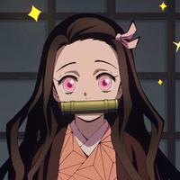

Toda la familia de Tanjiro fue asesinada por demonios. La unica sobreviviente fue su hermana la cual fue convertida en demonio. Frustrado por todo lo ocurrido, Tanjiro le pide ayuda a un ex asesino de demonios para que le enseñe todo lo sobre matar demonios. Luego, el se convierte oficialmente en un asesino de demonios y lucha para vengar a su familia y buscar una cura para su hermana.
Posturas de respiracion de Agua
Postura 1: Corte de la superficie del agua.
Postura 2: Rueda de Agua.
Postura 3: Danza de las Corrientes.
Postura 4: Golpe de Marea.
Postura 5: Lluvia tras la Sequía.
Postura 6: Torbelpno Sinuoso.
Postura 7: Gotas de Lluvia Penetrantes.
Postura 8: Lago de la Cascada.
Postura 9: Salpicadura Caótica.
Postura 10: El dragon del Cambio.
Sus camaradas.
Tanjiro conocio a sus dos mejores amigos. Los cuales son Inosuke y Zenitsu. Tambien, esta siempre acompañado de su hermana Nezuko. 